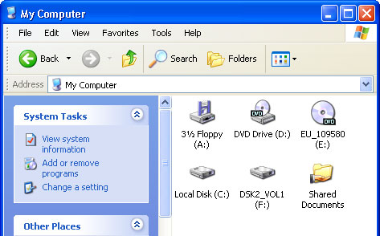
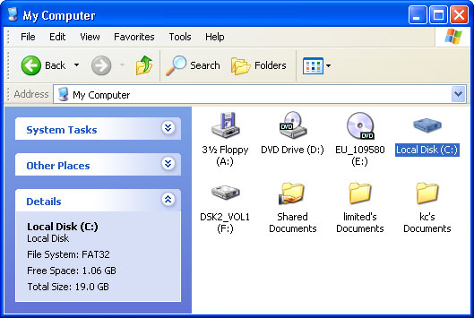
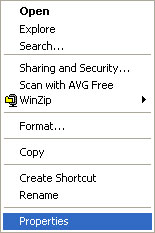
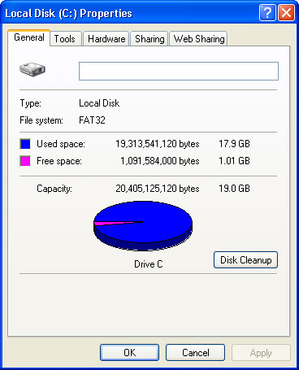

Free
computer Tutorials
|
Free
computer Tutorials
|
|
 home home |
Stay at Home and Learn | ||||
Windows XP Tutorials |
|||||
|
How Big is your Hard Drive?
Find the "My Computer" icon Start menu, and click with your
left mouse button. When the window opens it will look something like
this one:  The "My Computer" screen shows you different areas of your computer. In the picture, there are icons for the Floppy Drive, The C drive, and the D Drive. Don't worry if yours is not the same. But you'll probably have a D drive icon. There is a CD over the D drive icon, indicating that there is a CD in the disk drive on this computer.
The one we're interested in is the C drive icon. This is the Hard drive. There are two ways you can check your Hard drive to see how big it is. The easiest way is to click once on the C icon with your Left mouse button. The area on the left of the window will change to this:  The "Details" section at the bottom is showing how much space is free on your hard drive. It also shows how big the Hard drive is. GB stand for Gigabytes. So this Hard drive is just over 4 gigabytes. Not very big in today's computer market, where Hard drive ten and twenty times this size are common! There is another way to check how big your Hard drive is. Click on the C icon from the My Computer screen. But click on it with
your Right mouse button. You'll get a menu similar to the one below.
 Click on "Properties with your Left mouse button. You'll get the following dialogue box popping up.  Here, we get a pie chart showing us information about the hard drive: Used Space, Free Space and Capacity (How big your hard drive is). The Capacity is showing 19.0 Gigabytes, Used space 17.9 Gigabytes, and Free space 1.01 Gigabytes. Click the OK button to get rid of the dialogue box (One click with the left mouse button.) Get rid of the "My Computer" screen by clicking the red X in the top right hand corner. What we'll do now is create a folder on the hard drive. But we'll use the Windows Explorer to do it.
<--Back One Page Move on to the Next Part--> <--Back to the Beginner's Computing Contents Page View all our Home Study Computer Courses
|